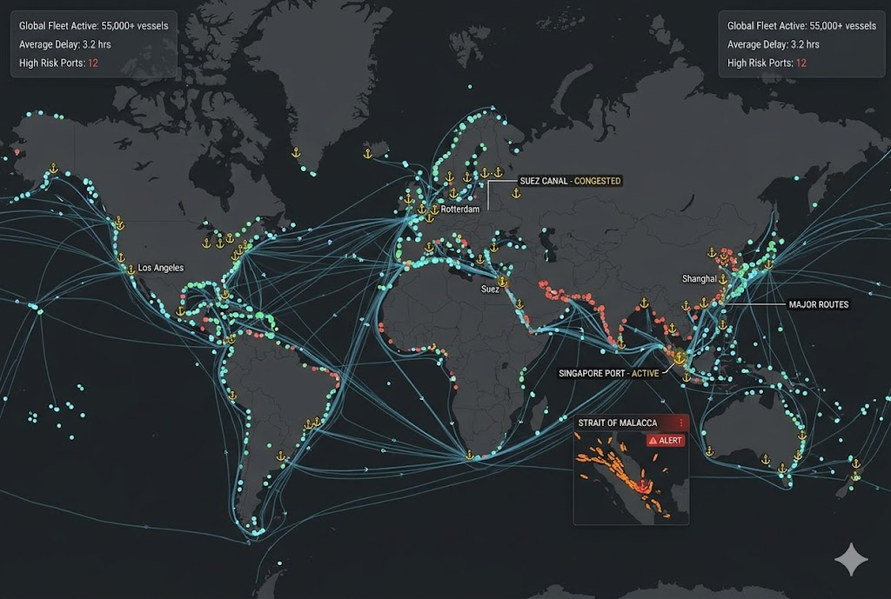

System Status: Optimal
AI-Powered Supply Chain
Risk Analyzer
Predict disruptions, analyze risks, and make smarter supply chain decisions in real-time with our neural intelligence engine.
Predict disruptions, analyze risks, and make smarter supply chain decisions in real-time with our neural intelligence engine.
Analyze and manage supply chain risks in real-time
Analyze disruptions using AI from news, weather, and logistics data.
Track live weather, port status, and global events.
Suggest safer and faster routes based on dynamic risk conditions.
Show congestion, delays, and port status in major global hubs.
Notify stakeholders about storms, strikes, and regional disruptions.
Show risk level (High/Medium/Low) with actionable insights.
Our neural nodes track every maritime vessel and cargo aircraft in real-time, predicting delays before they manifest.

Proprietary AI algorithms assign dynamic risk scores to every vendor in your stack based on 200+ geopolitical and environmental factors.
Anticipate disruptions up to 14 days in advance using deep learning models trained on historical trade data and news cycles.
When a risk is detected, the system automatically suggests alternative routes and suppliers to maintain operational continuity.